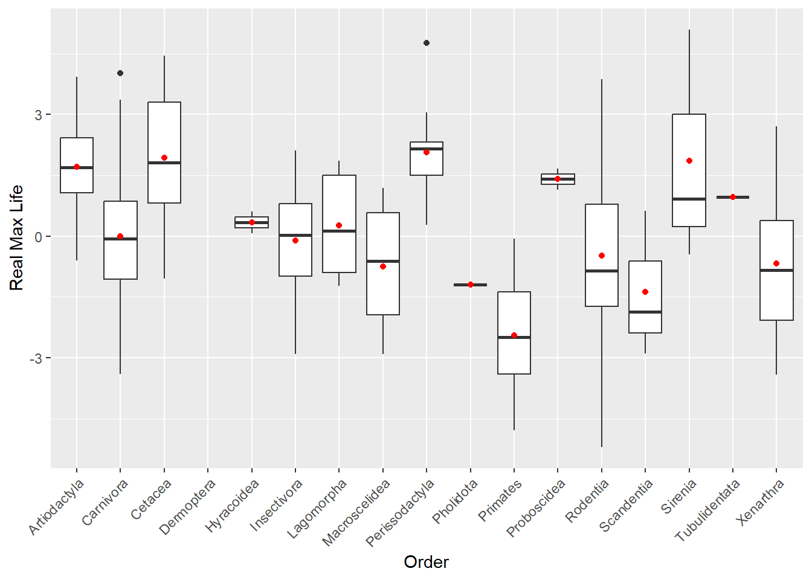

library(tidyverse)
library(dplyr)
library(broom)
library(naniar)
library(janitor)
library(MuMIn)Exercise 11
Prelims:
Load the following packages for this analysis:
Load the data:
d <- read_tsv("https://raw.githubusercontent.com/difiore/ada-datasets/main/Mammal_lifehistories_v2.txt")Rows: 1440 Columns: 14
── Column specification ────────────────────────────────────────────────────────
Delimiter: "\t"
chr (4): order, family, Genus, species
dbl (9): mass(g), gestation(mo), newborn(g), weaning(mo), wean mass(g), AFR(...
num (1): refs
ℹ Use `spec()` to retrieve the full column specification for this data.
ℹ Specify the column types or set `show_col_types = FALSE` to quiet this message.To avoid issues with parenthesis, I also downloaded the package {janitor} to clean my data and remove parenthesis, spaces, and other characters from column names. The package appear in the Prelims section.
d <- d %>%
clean_names()Step 1: Replace -999 values with NA
The function replace_with_na_all(), from the {naniar} package to replace -999 values across all numerical columns with NA.
d1 <- d %>%
replace_with_na_all(condition = ~. == -999)Step 2: Remove variables “litter size” and “refs”
d2 <- d1 %>%
select("order", "family", "genus", "species", "mass_g", "gestation_mo", "newborn_g", "weaning_mo", "wean_mass_g", "afr_mo", "max_life_mo", "litters_year")Step 3: Log transform all numerical values
d3 <- d2 %>%
mutate(across(where(is.numeric),log)) %>%
drop_na("order", "family", "genus", "species", "mass_g", "gestation_mo", "newborn_g", "weaning_mo", "wean_mass_g", "afr_mo", "max_life_mo", "litters_year")Step 4: Adding new variables
Regressions
m_gestation <- lm(data = d3, na.action=na.exclude, mass_g ~ gestation_mo)
m_weaning <- lm(data = d3, na.action=na.exclude, mass_g ~ weaning_mo)
m_AFR <- lm(data = d3, na.action=na.exclude, mass_g ~ afr_mo)
m_max.life <- lm(data = d3, na.action=na.exclude, mass_g ~ max_life_mo)
m_newborn <- lm(data = d3, na.action=na.exclude, mass_g ~ newborn_g)
m_wean.mass <- lm(data = d3, na.action=na.exclude, mass_g ~ wean_mass_g)Adding the new variables:
d4 <- d3 %>%
mutate(
relGes = m_gestation$residuals,
relWean = m_weaning$residuals,
relAFR = m_AFR$residuals,
relLife = m_max.life$residuals,
relNewbornMass = m_newborn$residuals,
relWeanMass = m_wean.mass$residuals
)Step 5: Plots
Max Lifespan and Order
p_maxlife <- ggplot(d4, aes(x = order, y = relLife)) +
geom_violin() +
stat_summary(fun = mean, geom = "point", color = "red") +
theme(axis.text.x = element_text(angle = 45, hjust = 1)) +
labs(x = "Order", y = "Real Max Life") +
geom_text(
data = d4 %>%
filter(!is.na(relLife)) %>%
count(order) %>%
mutate(y = min(d4$relLife) - 0.5),
aes(x = order, y = y, label = paste0("n=", n)),
color = "blue"
)
print(p_maxlife)Warning: Groups with fewer than two datapoints have been dropped.
ℹ Set `drop = FALSE` to consider such groups for position adjustment purposes.
Groups with fewer than two datapoints have been dropped.
ℹ Set `drop = FALSE` to consider such groups for position adjustment purposes.
Groups with fewer than two datapoints have been dropped.
ℹ Set `drop = FALSE` to consider such groups for position adjustment purposes.
If we simply look at the mean of the residuals, it would appear that the Sirenia order has the highest llifespan. However, the lack of a “violin” shape around the mean indicates that the sample for this order was too small (only 1). Thus, I would trust the only the orders with violin shapes. As such, I would say that the Cetacea and Perissodactyla orders tend to have the longest lifespan. Not only is the average higher than the other orders, but the violin shape is shorter, suggesting that the samples did not have much variation. That is too say, most of the sample survived for longer. However, these is also a small sample with only three individuals for Cetacea and two for Perissodactyla. For orders like Rodentia, even though the mean lifespan is not as low as others, the tails of the violin show that while some of the individuals survived almost as long as the individuals from Cetacea, just as many died quite early. Taking everything into account, I would argue that Artiodactyla is the order with the most proof for a highest lifespan, as it is the order with the highest lifespan among those with a larger sample.
Newborn Mass and Order
p_NewbornMass <- ggplot(d4, aes(x = order, y = relNewbornMass))+
geom_violin() +
stat_summary(fun = mean, geom = "point", color = "red") +
theme(axis.text.x = element_text(angle = 45, hjust = 1)) +
labs(x = "Order", y = "Real Newborn Mass (g)") +
geom_text(
data = d4 %>%
filter(!is.na(relNewbornMass)) %>%
count(order) %>%
mutate(y = min(d4$relNewbornMass) - 0.5),
aes(x = order, y = y, label = paste0("n=", n)),
color = "blue"
)
print(p_NewbornMass)Warning: Groups with fewer than two datapoints have been dropped.
ℹ Set `drop = FALSE` to consider such groups for position adjustment purposes.
Groups with fewer than two datapoints have been dropped.
ℹ Set `drop = FALSE` to consider such groups for position adjustment purposes.
Groups with fewer than two datapoints have been dropped.
ℹ Set `drop = FALSE` to consider such groups for position adjustment purposes.By far the order with the highest newborn mass is Carnivora. However, this order is also the one with the most variation. The shape of the violin suggests that only a few individuals in the sample had a high mass as newborns. The lower tail of the violin actually shows that more of them actually had lower mass as newborns. While the mean for the mass of Lagomorpha is slightly lower than the mean for the Carnivora, the shape of the violin suggests less variation. That is to say, more of the individuals had a newborn mass similar to the mean. However, as before, the sample size for this order is also on the lower side with only 7 individuals. Despite this, if this trend continued throughout the population, I would guess that Lagomorpha tends to have a higher newborn mass than Carnivora, and that those with high newborn mass in Carnivora are actually outliers.
Weaning Mass and Order
p_WeaningMass <- ggplot(d4, aes(x = order, y = relWeanMass))+
geom_violin() +
stat_summary(fun = mean, geom = "point", color = "red") +
theme(axis.text.x = element_text(angle = 45, hjust = 1)) +
labs(x = "Order", y = "Real Weaning Mass (g)") +
geom_text(
data = d4 %>%
filter(!is.na(relWeanMass)) %>%
count(order) %>%
mutate(y = min(d4$relWeanMass) - 0.5),
aes(x = order, y = y, label = paste0("n=", n)),
color = "blue"
)
print(p_WeaningMass)Warning: Groups with fewer than two datapoints have been dropped.
ℹ Set `drop = FALSE` to consider such groups for position adjustment purposes.
Groups with fewer than two datapoints have been dropped.
ℹ Set `drop = FALSE` to consider such groups for position adjustment purposes.
Groups with fewer than two datapoints have been dropped.
ℹ Set `drop = FALSE` to consider such groups for position adjustment purposes.Looking at this graph, it appears that Lagomorpha has the highest mass at weaning. In addition, when comparing this graph to the previous one, it would appear that variation in weight is much higher at weaning than it is at birth. I wonder what that says about the survival rate and rate of growth of the Lagomorpha? On the other hand, it appears that the mean and the range of weights for Carnivora stays quite similar between birth and weaning. Once again, however, the three orders with the highest means for the weight at weaning are those orders with only one individual in the sample.
Step 6: Model and Model Selection
Model Selection and Questions for Max Life
Model and Model Selection
life_model <- lm(data = d4, na.action = na.fail, max_life_mo ~ gestation_mo + newborn_g + weaning_mo + wean_mass_g + litters_year + mass_g)
life_dredge <- dredge(life_model)Fixed term is "(Intercept)"head(life_dredge)Global model call: lm(formula = max_life_mo ~ gestation_mo + newborn_g + weaning_mo +
wean_mass_g + litters_year + mass_g, data = d4, na.action = na.fail)
---
Model selection table
(Int) gst_mo ltt_yer mss_g nwb_g wen_mss_g wnn_mo df logLik AICc
40 4.032 0.2953 -0.2525 0.08226 0.1416 6 -122.206 256.8
48 3.920 0.3644 -0.2365 0.12140 -0.05423 0.1293 7 -121.647 257.9
56 4.028 0.3004 -0.2523 0.09128 -0.01089 0.1417 7 -122.190 258.9
52 4.133 0.2847 -0.2692 0.08586 0.1351 6 -123.634 259.7
64 3.910 0.3649 -0.2343 0.10850 -0.06342 0.02356 0.1271 8 -121.587 259.9
60 4.084 0.3155 -0.2618 -0.03169 0.11220 0.1272 7 -123.473 261.5
delta weight
40 0.00 0.400
48 1.03 0.240
56 2.11 0.139
52 2.85 0.096
64 3.07 0.086
60 4.68 0.039
Models ranked by AICc(x) The best model is the one that had the lowest AICc value at 256.8349 and a delta AICc value of 0.000. The formula for the best model would be: lm(formula = max_life_mo ~ gestation_mo + litters_year + mass_g + weaning_mo + 1, data = d4, na.action = na.fail). The AICc and delta values were obtained from the tibble life_dredge, the formula was obtained using this code:
life_best_model <- get.models(life_dredge, 1) [[1]]
summary(life_best_model)
Call:
lm(formula = max_life_mo ~ gestation_mo + litters_year + mass_g +
weaning_mo + 1, data = d4, na.action = na.fail)
Residuals:
Min 1Q Median 3Q Max
-1.47943 -0.25454 -0.03637 0.30307 1.03470
Coefficients:
Estimate Std. Error t value Pr(>|t|)
(Intercept) 4.03241 0.13276 30.374 < 2e-16 ***
gestation_mo 0.29528 0.07248 4.074 6.65e-05 ***
litters_year -0.25252 0.07724 -3.269 0.00127 **
mass_g 0.08226 0.01897 4.337 2.28e-05 ***
weaning_mo 0.14159 0.05207 2.719 0.00712 **
---
Signif. codes: 0 '***' 0.001 '**' 0.01 '*' 0.05 '.' 0.1 ' ' 1
Residual standard error: 0.4433 on 201 degrees of freedom
Multiple R-squared: 0.7675, Adjusted R-squared: 0.7629
F-statistic: 165.9 on 4 and 201 DF, p-value: < 2.2e-16Models with AICc Values Lower Than Four
Only five models have delta AICc values lower than 4, and two more models have delta AICc values less than five but more than 4. In the set of five models with delta values under or equal to 4, the variables that appear repeatedly are age at weaning (mo), gestation time (mo), and litters per year. The variables mass (g), mass as newborn (g), and mass at weaning (g) were NOT present in all five models. This could be interpreted to mean that maximum life depends more on the age at weaning, gestation time, and the litters per year and that mass, in general and at different points in a lifespan (newborn and weaning), does not have a strong influence in the maximum lifespan of an individual. Although I must highlight that mass (g) was present in four of the five top models.
The formula to find these variables was:
life_top_models <- subset(life_dredge, delta <= 4)
colSums(life_top_models[, 1:6] !=0) == nrow(life_top_models) (Intercept) gestation_mo litters_year mass_g newborn_g wean_mass_g
TRUE TRUE TRUE NA NA NA Model Average and Plot
Lastly, to calculate the model-averaged coefficients and their CIs across the tope five models I used this code:
life_avg <- model.avg(life_dredge, subset = delta <= 4)
summary(life_avg)
Call:
model.avg(object = life_dredge, subset = delta <= 4)
Component model call:
lm(formula = max_life_mo ~ <5 unique rhs>, data = d4, na.action =
na.fail)
Component models:
df logLik AICc delta weight
1236 6 -122.21 256.83 0.00 0.42
12346 7 -121.65 257.86 1.03 0.25
12356 7 -122.19 258.95 2.11 0.14
1256 6 -123.63 259.69 2.85 0.10
123456 8 -121.59 259.91 3.07 0.09
Term codes:
gestation_mo litters_year mass_g newborn_g wean_mass_g weaning_mo
1 2 3 4 5 6
Model-averaged coefficients:
(full average)
Estimate Std. Error Adjusted SE z value Pr(>|z|)
(Intercept) 4.00291 0.16134 0.16215 24.687 < 2e-16 ***
gestation_mo 0.31844 0.08975 0.09022 3.530 0.000416 ***
litters_year -0.24853 0.07848 0.07895 3.148 0.001645 **
mass_g 0.08746 0.04908 0.04925 1.776 0.075726 .
weaning_mo 0.13659 0.05294 0.05326 2.565 0.010332 *
newborn_g -0.01920 0.04131 0.04146 0.463 0.643204
wean_mass_g 0.00911 0.04176 0.04191 0.217 0.827903
(conditional average)
Estimate Std. Error Adjusted SE z value Pr(>|z|)
(Intercept) 4.00291 0.16134 0.16215 24.687 < 2e-16 ***
gestation_mo 0.31844 0.08975 0.09022 3.530 0.000416 ***
litters_year -0.24853 0.07848 0.07895 3.148 0.001645 **
mass_g 0.09717 0.04164 0.04185 2.322 0.020236 *
weaning_mo 0.13659 0.05294 0.05326 2.565 0.010332 *
newborn_g -0.05666 0.05398 0.05431 1.043 0.296810
wean_mass_g 0.02724 0.06870 0.06898 0.395 0.692865
---
Signif. codes: 0 '***' 0.001 '**' 0.01 '*' 0.05 '.' 0.1 ' ' 1To plot this data, first I need to tidy the data in a way ggplot can read into a plot:
life_tidy_avg <- as.data.frame(confint(life_avg, full = TRUE)) %>%
mutate(
term = rownames(.),
estimate = coef(life_avg, full = TRUE)
) %>%
filter(term != "(Intercept)")
print(life_tidy_avg) 2.5 % 97.5 % term estimate
gestation_mo 0.141606708 0.49526367 gestation_mo 0.31843519
litters_year -0.403270783 -0.09378398 litters_year -0.24852738
mass_g -0.009057336 0.18398314 mass_g 0.08746290
weaning_mo 0.032198921 0.24097775 weaning_mo 0.13658833
newborn_g -0.100466619 0.06205567 newborn_g -0.01920547
wean_mass_g -0.073026096 0.09124662 wean_mass_g 0.00911026Now that the data is in tidy form, I can plot:
life_avg_plot <- ggplot(life_tidy_avg,
aes(x = reorder(term, estimate),
y = estimate)) +
geom_point() +
geom_errorbar(aes(ymin = `2.5 %`, ymax = `97.5 %`)) +
labs(x = "Predictor Variables", y = "Model-averaged Estimate")
print(life_avg_plot)Model Selection for Age of First Reproduction
Model and Model Selection
afr_model <- lm(data = d4, na.action = na.fail, afr_mo ~ gestation_mo + newborn_g + weaning_mo + wean_mass_g + litters_year + mass_g)
afr_dredge <- dredge(afr_model)Fixed term is "(Intercept)"head(afr_dredge)Global model call: lm(formula = afr_mo ~ gestation_mo + newborn_g + weaning_mo +
wean_mass_g + litters_year + mass_g, data = d4, na.action = na.fail)
---
Model selection table
(Int) gst_mo ltt_yer mss_g nwb_g wen_mss_g wnn_mo df logLik AICc
40 1.973 0.4030 -0.7097 0.03619 0.1447 6 -154.402 321.2
52 2.013 0.3959 -0.7160 0.038670 0.1422 6 -154.550 321.5
36 2.189 0.5002 -0.7576 0.1253 5 -155.758 321.8
44 2.100 0.3731 -0.7314 0.039570 0.1495 6 -154.699 321.8
56 1.974 0.4018 -0.7097 0.03408 0.002542 0.1447 7 -154.402 323.4
48 1.969 0.4052 -0.7092 0.03748 -0.001784 0.1443 7 -154.402 323.4
delta weight
40 0.00 0.248
52 0.30 0.214
36 0.59 0.185
44 0.59 0.184
56 2.14 0.085
48 2.14 0.085
Models ranked by AICc(x) The best model is the one that had the lowest AICc value at 321.2266 and a delta AICc value of 0.000. The formula for the best model would be: lm(formula = afr_mo ~ gestation_mo + litters_year + mass_g + weaning_mo + 1, data = d4, na.action = na.fail). The AICc and delta values were obtained from the tibble afr_dredge, the formula was obtained using this code:
afr_best_model <- get.models(afr_dredge, 1) [[1]]
summary(afr_best_model)
Call:
lm(formula = afr_mo ~ gestation_mo + litters_year + mass_g +
weaning_mo + 1, data = d4, na.action = na.fail)
Residuals:
Min 1Q Median 3Q Max
-1.33415 -0.32109 0.00924 0.37530 1.72131
Coefficients:
Estimate Std. Error t value Pr(>|t|)
(Intercept) 1.97319 0.15521 12.713 < 2e-16 ***
gestation_mo 0.40296 0.08474 4.755 3.77e-06 ***
litters_year -0.70968 0.09031 -7.858 2.31e-13 ***
mass_g 0.03619 0.02217 1.632 0.1042
weaning_mo 0.14467 0.06088 2.376 0.0184 *
---
Signif. codes: 0 '***' 0.001 '**' 0.01 '*' 0.05 '.' 0.1 ' ' 1
Residual standard error: 0.5183 on 201 degrees of freedom
Multiple R-squared: 0.8072, Adjusted R-squared: 0.8034
F-statistic: 210.4 on 4 and 201 DF, p-value: < 2.2e-16Models with AICc Values Lower Than Four
Ten models have delta AICc values lower than 4, and two more models have delta AICc values less than five but more than 4. In the set of ten models with delta values under or equal to 4, the only variables that appear repeatedly are gestation time (mo) and litters per year. The rest of the variables were not present in all 10 models. However, I must point out that age at weaning (mo) was present in the first 7 models, including the best fit model, which could indicate that age at weaning has somewhat of an effect on age at first reproduction.
The formula to find these variables was:
afr_top_models <- subset(afr_dredge, delta <= 4)
colSums(afr_top_models[, 1:6] !=0) == nrow(afr_top_models) (Intercept) gestation_mo litters_year mass_g newborn_g wean_mass_g
TRUE TRUE TRUE NA NA NA Model Averages and Plot
afr_avg <- model.avg(afr_dredge, subset = delta <= 4)
summary(afr_avg)
Call:
model.avg(object = afr_dredge, subset = delta <= 4)
Component model call:
lm(formula = afr_mo ~ <10 unique rhs>, data = d4, na.action = na.fail)
Component models:
df logLik AICc delta weight
1236 6 -154.40 321.23 0.00 0.20
1256 6 -154.55 321.52 0.30 0.18
126 5 -155.76 321.82 0.59 0.15
1246 6 -154.70 321.82 0.59 0.15
12356 7 -154.40 323.37 2.14 0.07
12346 7 -154.40 323.37 2.14 0.07
12456 7 -154.54 323.65 2.43 0.06
12 4 -157.96 324.12 2.89 0.05
123 5 -157.26 324.81 3.58 0.03
125 5 -157.32 324.94 3.71 0.03
Term codes:
gestation_mo litters_year mass_g newborn_g wean_mass_g weaning_mo
1 2 3 4 5 6
Model-averaged coefficients:
(full average)
Estimate Std. Error Adjusted SE z value Pr(>|z|)
(Intercept) 2.059308 0.164411 0.165109 12.472 < 2e-16 ***
gestation_mo 0.424816 0.104323 0.104789 4.054 5.04e-05 ***
litters_year -0.736632 0.096521 0.097003 7.594 < 2e-16 ***
mass_g 0.013294 0.029383 0.029501 0.451 0.652
weaning_mo 0.125434 0.073485 0.073759 1.701 0.089 .
wean_mass_g 0.009906 0.031169 0.031308 0.316 0.752
newborn_g 0.006295 0.028974 0.029108 0.216 0.829
(conditional average)
Estimate Std. Error Adjusted SE z value Pr(>|z|)
(Intercept) 2.05931 0.16441 0.16511 12.472 < 2e-16 ***
gestation_mo 0.42482 0.10432 0.10479 4.054 5.04e-05 ***
litters_year -0.73663 0.09652 0.09700 7.594 < 2e-16 ***
mass_g 0.03511 0.03891 0.03915 0.897 0.3698
weaning_mo 0.14159 0.06171 0.06207 2.281 0.0225 *
wean_mass_g 0.02921 0.04797 0.04823 0.606 0.5448
newborn_g 0.02227 0.05113 0.05140 0.433 0.6648
---
Signif. codes: 0 '***' 0.001 '**' 0.01 '*' 0.05 '.' 0.1 ' ' 1To tidy the data:
afr_tidy_avg <- as.data.frame(confint(afr_avg, full = TRUE)) %>%
mutate(
term = rownames(.),
estimate = coef(afr_avg, full = TRUE)
) %>%
filter(term != "(Intercept)")
print(afr_tidy_avg) 2.5 % 97.5 % term estimate
gestation_mo 0.21943208 0.63019936 gestation_mo 0.424815719
litters_year -0.92675475 -0.54650981 litters_year -0.736632281
mass_g -0.04452686 0.07111438 mass_g 0.013293763
weaning_mo -0.01913137 0.26999938 weaning_mo 0.125434007
wean_mass_g -0.05145792 0.07126901 wean_mass_g 0.009905543
newborn_g -0.05075616 0.06334641 newborn_g 0.006295123Plot:
afr_avg_plot <- ggplot(afr_tidy_avg, aes(
x = reorder(term, estimate),
y = estimate
)) +
geom_point() +
geom_errorbar(aes(
ymin = `2.5 %`,
ymax = `97.5 %`
)) +
labs(
x = "Predictor Variables",
y = "Model-average Estimate"
)
print(afr_avg_plot)